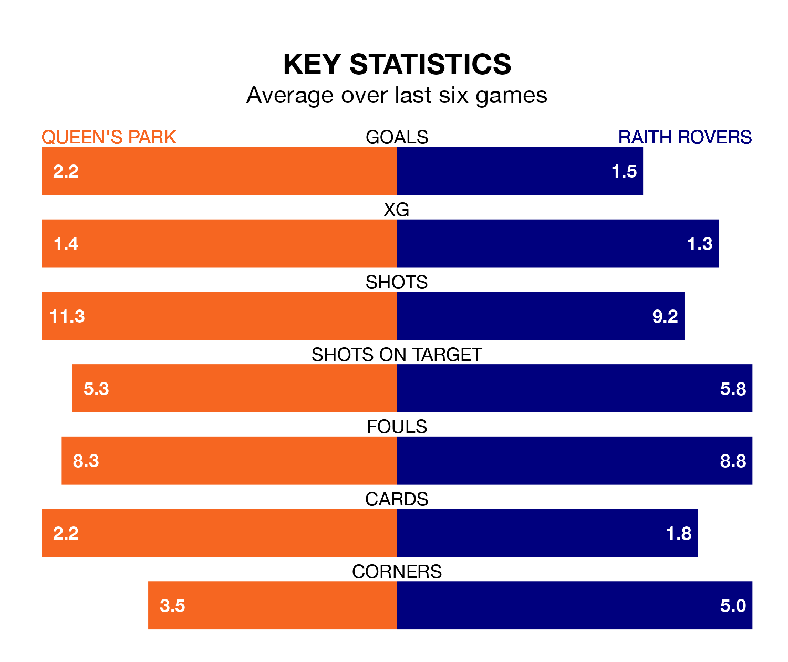

Saturday's match between Queen's Park and Raith Rovers promises to be one for the neutrals, as two of the Championship's most free-scoring sides go head-to-head.
Ahead of the game at Hampden Park, the Spiders and Raith sit fourth and third in the goal-scoring charts, with 41 and 49 goals respectively.
Striker Ruari Paton leads the way for the home side, having bagged 15 goals in their 28 games to date.
And Lewis Vaughan has been the main man in the opponents' penalty box for Raith, with 12 goals.
Raith are second in the table after 28 games, of which they have won 17 and drawn six, earning 57 points.
Queen's Park are four places behind Rovers in sixth, with eight wins and eight draws putting them on 32 points.
In the last 10 years, Queen's Park and Raith have played each other on 12 occasions. Queen's Park won three of them, Raith eight, and they drew once.
On average, the Spiders scored 1.2 goals and Raith 2.1 in those matches.
Their last meeting was on January 13, when Queen's Park won 2-1 away.
With Maciej Dabrowski between the sticks, the away side can rely on one of the league's safest pair of hands. He has kept seven clean sheets in his 26 appearances this season, and only two other 'keepers – Dundee United's Jack Walton and Airdrieonians's Joshua Rae – have been able to prevent the opposition scoring on more occasions in the Championship.
In the Spiders's net, Calum Ferrie has six clean sheets in 21 games. He has conceded a goal every 63 minutes, 10% more often than the 71 minutes between goals for Dabrowski.
The hosts are in mixed form in the Championship, with two wins and three draws from their last six games.
With four wins and a draw over that period, Raith's form is better – they have taken 13 points from 18, compared to Queen's Park's nine.
Queen's Park's last match was on March 9, a 2-2 draw against Partick Thistle, with Cillian Sheridan and Paton getting the goals for the Spiders.
Raith beat Partick Thistle 1-0 last time out, on Tuesday, with Euan Murray on the scoresheet.
Saturday's match will be refereed by Kevin Clancy, who has taken charge of two Championship games so far this season, issuing no red cards and booking seven players. He has not awarded any penalties.
He is yet to oversee a match featuring either Queen's Park or Raith this season.
Updated: 15:10 (UTC), 15/03/24